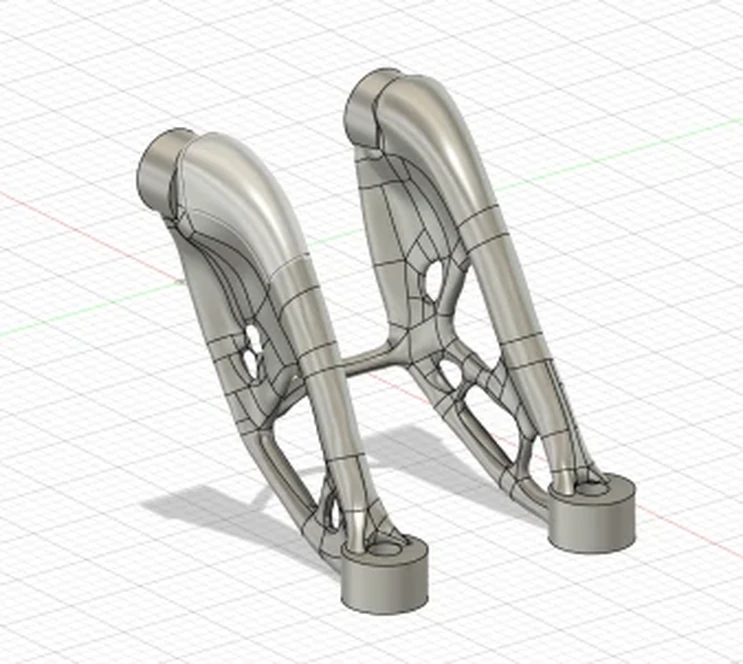

01 / SELECTED
Generative design
72.86% lighter6.984 g model mass; 0.019 mm reported simulated maximum displacement.
03 / IME 432 · ADDITIVE MANUFACTURING · WINTER 2025
Redesigning a load-bearing mounting bracket for metal additive manufacturing—with weight, stiffness, printability, and dimensional quality in view.


Our team redesigned a small stainless-steel mounting bracket to reduce mass without sacrificing its intended structural function.
The original bracket had four fixed mounting holes for M2.5 fasteners and a specified load case. We evaluated generative design, an internal lattice, and shape optimization as ways to make the part lighter while considering the limitations of metal 3D printing.
My assigned responsibilities were design validation, qualification, and cost analysis. CAD modeling, FDM prototyping, and metal manufacturing/post-processing were assigned to other teammates, and the project was completed collaboratively.
Baseline CAD mass
Selected CAD mass
Mass reduction versus baseline
Reported maximum displacement
Assignment objectives included at least 30% mass reduction and simulated tip deflection below 0.05 mm. The specified material was 316L stainless steel, with mounting-hole locations unchanged and a prescribed loading condition of 100 N at each loaded hole edge.
04 / STRUCTURAL EVALUATION
The design review compared each proposal against the stiffness and weight targets. The selected generative design showed a reported 0.019 mm maximum displacement in simulation, below the assignment's 0.05 mm limit.
My validation work also considered manufacturing risks such as support generation, print orientation, potential warpage, and part distortion. Simulation results were treated as design-stage evidence rather than a substitute for measuring a physical part.

05 / MANUFACTURING & QUALIFICATION
The team manufactured the selected design in 316L stainless steel using selective laser melting (SLM) and completed support removal and post-processing. The design review reported a successful print without major build failure.
Qualification revealed limits that the CAD model alone could not show: some measured features were outside the drawing's specified tolerances. The team highlighted improvements to the slender connecting region, dimensional control, machine calibration, and post-processing.
For my cost analysis, the presentation estimated a three-hour build, approximately $0.26 in material, and $75 in labor per part. The resulting $75.26 was a course estimate for direct material and labor, not a validated production quote or a fully allocated equipment cost.

06 / REFLECTION
The final print demonstrated that the lightweight concept could be fabricated, but its dimensional discrepancies pointed to an equally important part of manufacturing engineering: qualification against the drawing and requirements.
If the project continued, the team proposed strengthening the middle connecting brace and improving machine calibration and post-processing to bring more features into tolerance.
Academic team project: Angela Foo, Brett Beaudoin, Jaylan Mo, and Joshan Darji · Cal Poly IME 432. Visuals and figures are taken from the team's final design review.
View full design review